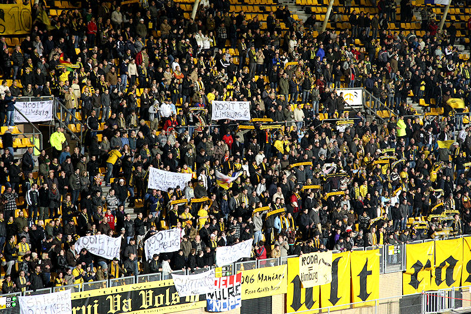
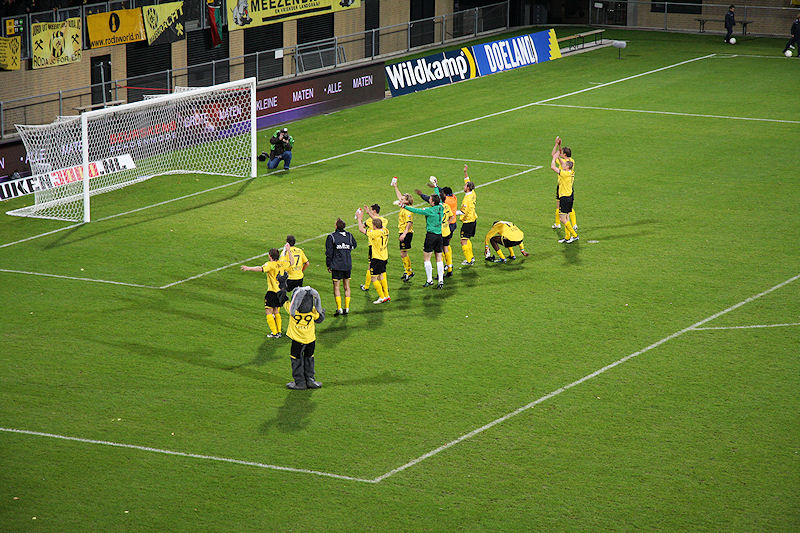
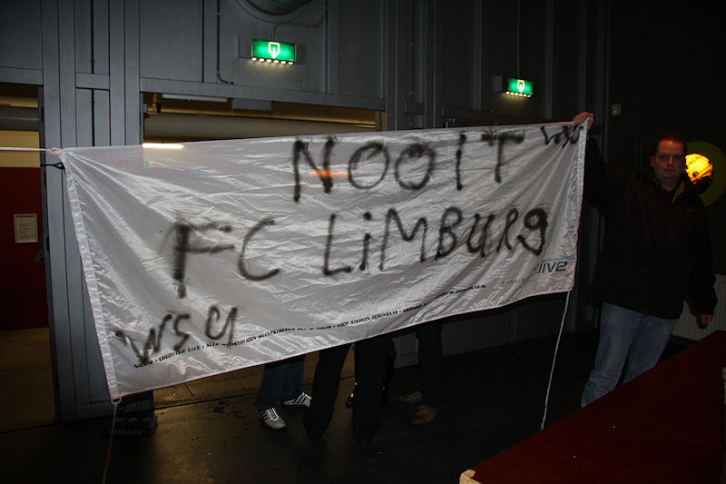

Het carnavalsseizoen is geopend.

80 stuks tricolores.

Anti-FCL.
Willem won de toss en koos de richting. Wie de traditie kent weet dat dit
tot een nederlaag leidt.
Roda heeft veel meer balbezit. Cissé verschijnt regelmatig voor doelman
Aerts. Helaas zonder resultaat. Om onbegrijpelijke redenen rekt
Aerts vanaf het begin van de wedstrijd tijd.
Matondo speelt zijn beste wedstrijd tot nu toe.
In plaats van de bal er zelf in te prikken, speelt Bodor de bal op de
buitenspel staande Cissé.
Willem speelt zwak en is alleen gevaarlijk bij corners.
Schenkel verspeelt de bal waarna Cissé de bal tussen de benen van Aerts in
het doel schuift...
... 1-0, Cissé, (42').
Dit zien we niet meer vaak in het PLS.

Deze zwangere vrouw heeft drie vrienden. Wie is de dader?
De tweede helft is aanvankelijk iets rommelig. Er valt geel voor De Fauw.
In de slotfase perst Willem II er een wanhoopsoffensief uit.

Roda houdt stand waarna de spelers weer eens het humba-ritueel mogen
ondergaan.
Meer carnavalisten dan spelers in de Kickoff.
Dit zijn de coole gasten van de Zumpelveld-Bochus connection.
Dealer van super-K-emblemen.

Midweeks komen er kennelijk geen spelers naar de Kickoff. Maar dit spandoek
is dan ook met name voor Kuijer bedoeld.